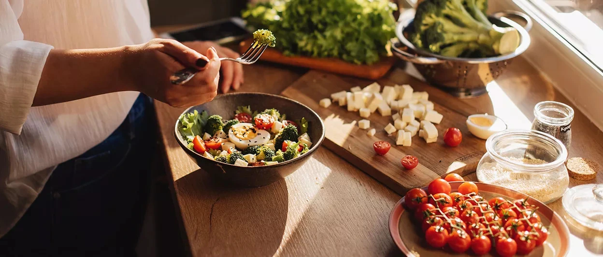
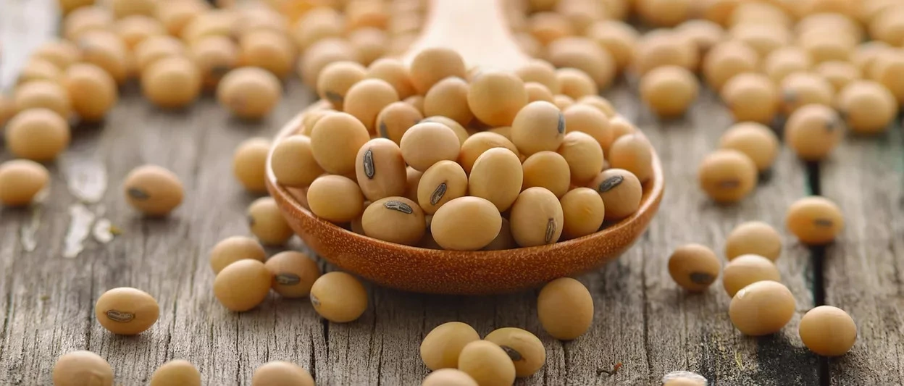
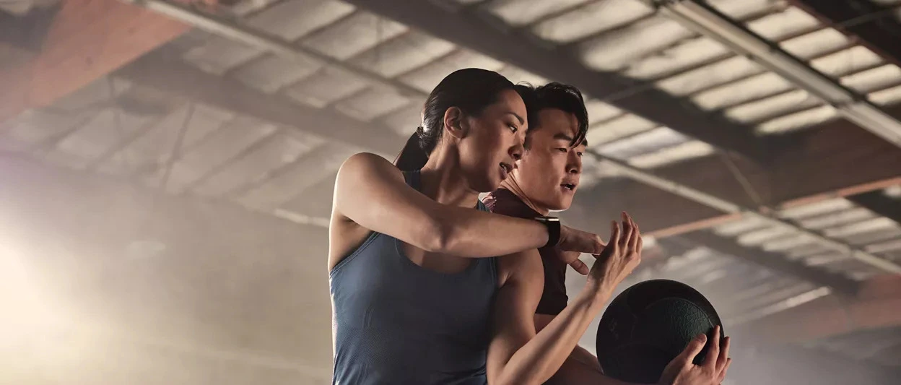

Loading...
Hai, saya Hesty. Saya seorang ibu rumah tangga dengan dua anak, berusia 41 tahun, dan berasal dari Makassar, Sulawesi Selatan. Perjalanan saya menurunkan berat badan dimulai ketika saya memutuskan untuk mengubah pola makan, rutin berolahraga, dan menjaga waktu istirahat.
Alhamdulillah, berkat konsistensi, saya berhasil menurunkan berat badan hingga 13 kg. Sekarang, saya merasa jauh lebih bugar dan berenergi dibandingkan beberapa tahun lalu saat berat badan saya masih berlebih. Saya paham betul bahwa perubahan gaya hidup bukanlah sesuatu yang instan, melainkan proses yang membutuhkan waktu, bimbingan, dan dukungan. Karena itu, saya ingin berbagi pengalaman dan semangat kepada siapa pun yang ingin memulai hidup sehat dan aktif.
Melalui Virtual Diet Class ini, kita bisa saling menyemangati dan mendukung satu sama lain untuk mencapai perubahan yang lebih baik bersama-sama.


